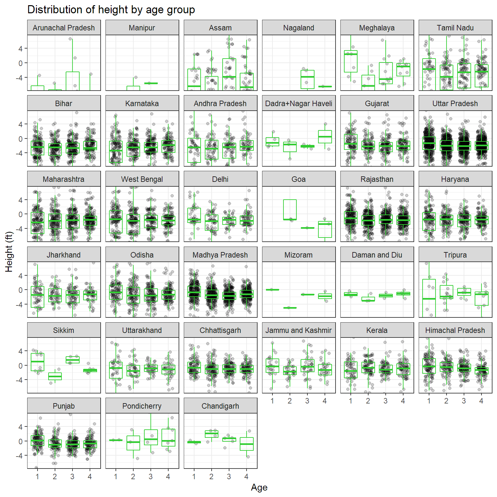

Introduction
Visualization
The visualizations below provide an example of using R to summarize and visualize anthropometric data and other household data that was collected in India during the IHDS study. The scripts used to get and create the data for the visualizaings below can be found here. The IHDS can be downloaded from the ICPSR.
tidyICPSR
We have developed an R package called tidyICPSR that provides functionality to get the two studies downloaded and formatted into a tidy format where all column values are transformed into correct variable values. The full column names can be used as well. The package is still in early development and is currently meant more for a proof of concept and could be helpful for those that would like to use R with the data from ICPSR.
- Rmd file that created this page
- Use the’ ‘Code’ buttons to see the code to generate the graphic
2011 IHDS Exploration (Individual)
#devtools::install_github("hathawayj/tidyICPSR")
#install.packages("pacman")
pacman::p_load(knitr, rmdformats, tidyverse, ggthemes, forcats, geofacet, tidyICPSR, growthstandards)
ind11 <- read_rds(path = "../data/artifacts/2011_36151_India.Rds")
### Build data items for plots
###
dat <- ind11 %>%
mutate(stateid = str_remove_all(stateid, " [:digit:]+") %>%
str_replace_all("&", "and") %>% str_replace_all("Orissa", "Odisha"),
ro3 = str_remove_all(ro3, " [:digit:]+"), ro3 = str_remove_all(ro3, ";")) %>%
select(idperson, stateid, hhid, distid, psuid, hhsplitid, idhh,
anthro_id = ap3, age = ro5, height1 = ap5, height2 = ap6,
anthro_position = ap7, weight1 = ap8, weight2 = ap9,
sex = ro3, relation_head = ro4, diarrhea = sm7,
hours_work_year = wkhours, annual_wages = wsearn)
household <- dat %>%
group_by(hhid, stateid, distid, psuid, hhsplitid, idhh) %>%
summarise(n = n(), children = sum(age <= 18, na.rm = TRUE),
household_wages = sum(annual_wages, na.rm = TRUE),
household_hours = sum(hours_work_year, na.rm = TRUE)) %>%
ungroup()
kids <- dat %>%
filter(age <= 5) %>%
left_join(household)Household Income
The household income numbers are close to the other reports we found. The median household income from this study data is 31828 NRP.
- https://cmie.com/kommon/bin/sr.php?kall=warticle&dt=2016-07-04%2013:45:29&msec=170
- https://www.quora.com/What-is-the-median-income-of-households-in-different-states-of-India
The graphic below shows the median (dot) and the 25th and 75th percentiles (linerange) of household income for each region of India.
household %>%
mutate(stateid = fct_reorder(stateid, household_wages, median)) %>%
group_by(stateid) %>%
summarise(p25 = quantile(household_wages, .25), median = median(household_wages), p75 = quantile(household_wages, .75)) %>%
ungroup() %>%
ggplot(aes(y = median/10000, x = stateid)) +
geom_pointrange(aes(ymin = p25/10000, ymax = p75/10000)) +
# geom_vline(aes(xintercept = median), data = state_labels) +
theme_bw() +
labs(y = "Household income (10,000 INR)", x = "Region", title = "Distribution of Household Income") +
theme(panel.grid.minor = element_blank(), axis.text.x = element_text(angle = 45, vjust = 1, hjust = 1)) 
Below we have displayed the household income (x-axis), and the line shows the proportion of households from the study at a given income. As of this work 100,000 INR converts to ~$1500.
f90 <- function(x){ quantile(x, .9, na.rm = TRUE)}
state_labels <- household %>%
mutate(stateid = fct_reorder(stateid, household_wages, f90)) %>%
group_by(stateid) %>%
summarise(sum_n = sum(n), mean = mean(household_wages, na.rm = TRUE),
median = median(household_wages, na.rm = TRUE),
p90 = quantile(household_wages, .9, na.rm = TRUE),
p10 = quantile(household_wages, .1,na.rm = TRUE)) %>%
ungroup()
household %>%
mutate(stateid = fct_reorder(stateid, household_wages, f90)) %>%
ggplot(aes(x = household_wages/100000)) +
# geom_rect(data = state_labels, aes(fill = p90),
# xmin = -Inf, ymin = -Inf, xmax = Inf, ymax = Inf, alpha = 0.5,
# inherit.aes = FALSE) +
stat_ecdf(geom = "step", pad = TRUE) +
theme_bw() +
coord_cartesian(xlim = c(0, 10)) +
scale_x_continuous(breaks = seq(0, 10, by = 2)) +
scale_y_continuous(breaks = seq(0, 1, by = .2)) +
geom_hline(color = "darkgrey", yintercept = c(.9)) +
geom_vline(data = state_labels, aes(xintercept = p90/100000), color = "darkgrey") +
labs(x = "Household income (100,000 INR)", y = "Proportion", title = "Distribution of Household Income") +
facet_wrap(~stateid, labeller = labeller(stateid = label_wrap_gen(10)), nrow = 6) 
# facet_geo(~stateid, grid = india_grid2, labeller = labeller(stateid = label_wrap_gen(10))) Household Size
The household count numbers seem to make sense based on numbers reported at the following links. The median household size from this study data is 5. There is not much exciting in the below graphic.
- https://en.wikipedia.org/wiki/Indian_states_ranking_by_household_size
- http://www.arcgis.com/home/item.html?id=6cf22970ea8c4b338a196879397a76e4
household %>%
mutate(stateid = fct_reorder(stateid, n, median)) %>%
group_by(stateid) %>%
summarise(p25 = quantile(n, .25), median = median(n), p75 = quantile(n, .75)) %>%
ungroup() %>%
ggplot(aes(y = median, x = stateid)) +
geom_pointrange(aes(ymin = p25, ymax = p75)) +
# geom_vline(aes(xintercept = median), data = state_labels) +
theme_bw() +
labs(y = "Number in household", x = "Region", title = "Distribution of Household Size") +
scale_y_continuous(breaks = seq(0,30, by = 5), limits = c(0, 15)) +
theme(panel.grid.minor = element_blank(), axis.text.x = element_text(angle = 45, vjust = 1, hjust = 1)) One to four years old height distributions
Some data quality issues will require further investigation for the heights. We have converted the heights into Z-scores (HAZ) using growthstandards::who_htmc2zscore(). The ages are grouped by year in the data so the HAZ values will be much more variable than usual as some of the values could be off by as much as 364 days.
# Household heights by age
kids %>%
filter(age < 5, age > 0) %>%
mutate(age = ifelse(age == 0, .5, age),
zscore = who_htcm2zscore(agedays = .$age*365.25 , htcm = .$height2, sex = .$sex ),
stateid = fct_reorder(stateid, zscore, median, na.rm = T)) %>%
ggplot(aes(y = zscore, x = factor(age)), fill = "darkgrey") +
geom_jitter(height = 0, width = .25, alpha = .2) +
geom_boxplot(fill = NA, color = "limegreen", outlier.colour = NA) +
theme_bw() +
scale_color_brewer(type = "qual") +
coord_cartesian(ylim = c(-7, 7)) +
labs(y = "Height (ft)", x = "Age", title = "Distribution of height by age group") +
facet_wrap(~stateid)
0-1-year-old heights by income category
Since the HAZ values are very sensitive to incorrect age day values, we show the heights of those labeled as zero years old. Remember that this figure shows all newborns from 0-365 days.
# Household heights by age
kids %>%
filter(age == 0) %>%
mutate(stateid = fct_reorder(stateid, height2, median, na.rm = T)) %>%
ggplot(aes(y = height2, x = stateid), fill = "darkgrey") +
geom_jitter(height = 0, width = .25, alpha = .2) +
geom_boxplot(fill = NA, color = "limegreen", outlier.colour = NA) +
theme_bw() +
scale_color_brewer(type = "qual") +
labs(y = "Height (cm)", x = "Region", title = "< 1 year heights") +
coord_flip()2011 IHDS Exploration (Births)
Distribution of number of births per household
dat <- read_rds(path = "../data/artifacts/2011_36151_India_births.Rds")
dat %>%
group_by(idhh, stateid, mother_id) %>%
summarise(births = max(nbirths)) %>%
ungroup() %>%
mutate(stateid = fct_reorder(stateid, births, quantile, probs = .75)) %>%
ggplot(aes(x = stateid, y = births)) +
geom_boxplot() +
coord_flip() +
theme_bw() +
labs(y = "Births per Mother", x = "Region")IHDS Data Prep
The development R package tidyICPSR has the functions used to download and prep the data.
Code
All of the R code to download, process, and replicate this analysis (including the code that generates this document) is available here.